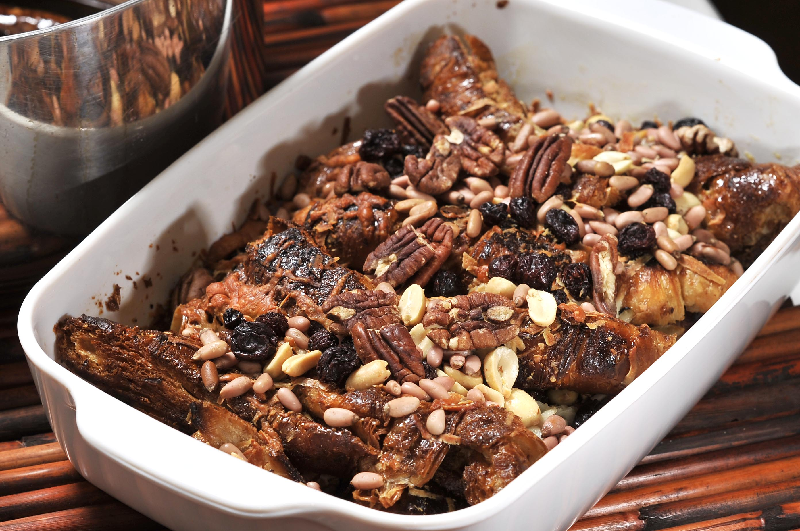

Capirotada

Description
Capirotada is a deliciously rich Mexican bread pudding that's
traditionally served during Lent and Easter.
It's more commonly made with piloncillo (Mexican brown sugar).
The ingredients are largely the same as those used during the 1640s to make breads and cakes. These ingredients and recipes have been recorded by the Holy Office of the Inquisition and saved to this day in the archives. The bread represents the Body of Christ, the syrup is his blood, the cloves are the nails of the cross, and the whole cinnamon sticks are the wood of the cross. The melted cheese stands for the Holy Shroud.
Ingredients
- 3 cups water
- 3 cups brown sugar, divided
- 2 cinnamon sticks
- 2 cups butter, softened
- 2 loaves sliced white bread, toasted
- ¼ teaspoon ground cinnamon, or to taste
- ¼ teaspoon ground nutmeg, or to taste
- ⅛ teaspoon ground cloves, or to taste
- 2 cups raisins
- 2 cups peanuts
- 1 pound shredded sharp Cheddar cheese
Steps
- Preheat the oven to 350 degrees F (175 degrees C).
- Combine water, 2 cups brown sugar, and cinnamon sticks together in a saucepan; bring to a boil. Reduce heat and simmer, stirring occasionally, until sugar is dissolved and liquid has reduced into a syrup, about 15 minutes. Remove cinnamon sticks from syrup using a slotted spoon.
- Spread butter onto each toasted bread slice. Make 1 layer of buttered bread in a deep casserole dish or oven-proof stockpot. Sprinkle cinnamon, nutmeg, and cloves over bread layer. Sprinkle 1/4 of the raisins, 1/4 of the peanuts, 1/4 of the remaining brown sugar, and 1/4 of the Cheddar cheese over bread layer. Repeat layering with remaining ingredients. Pour cinnamon syrup over entire dish; cover with aluminum foil.
- Bake in the preheated oven until cooked through, about 30 minutes. Cool for 15 to 20 minutes before serving.